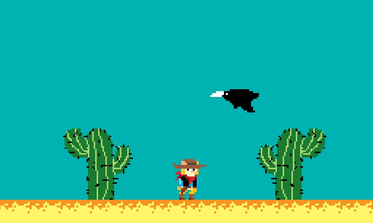

O projeto
O projeto de desenvolvimento do jogo "catexas" foi uma iniciativa da professora fabricia como alternativa para o ensino de conceitos trabalhados nas materias de Projeto de design web e fundamentos de design web e arquitetura da informação. Alem disso, recentemente a disciplina de desenvolvimento front end foi incluída.
Catexas narra a historia de lenny, personagem central, lenny é um gato bandido do velho oeste, e por causa de suas malfeitorias deve batalhar contra as autoridades visando continuar em liberdade
Saiba mais:
IFMS campus dourados. Kassiano Valenciano de Carvalho, Davi Fava Razuk e Marcos Felipe Ribeiro Marques